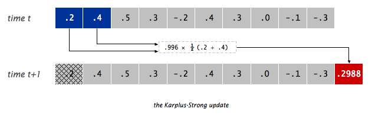

- Getting the Skeleton Files
- Introduction
- Task 1: BoundedQueue
- Task 2: ArrayRingBuffer
- Task 3: GuitarString
- Just For Fun: TTFAF
- Even More Fun
- Why It Works
- Task 4: Iteration, Exceptions, and Equals
- Submission
- Frequently Asked Questions
- I’m getting a “class file contains wrong class” error.
- I’m getting a message that I did not override an abstract method, but I am!
- I’m getting … in ArrayRIngBuffer and … in BoundedQueue have the same erasure, yet neither overrides the other.
- When I try to run the provided tests I get “No runnable methods”.
- I’m failing the nested iteration test. What does this mean?
- When I try to compile my code, it says type K#1 is not compatible with type K#2, or something similar.
- I’m getting a strange autograder error!
- Additional Thoughts
Getting the Skeleton Files
As usual git pull skeleton master to get the starting files.
Note that for this homework, unlike the earlier projects, we’ll be providing lots of starter code for you to fill in.
Introduction
In this homework, we will create a package for generating synthesized musical instruments. You will learn how to write and use packages, as well as get some hands-on practice with interfaces. We’ll also get an opportunity to implement a simple data structure as well as an algorithm that’s easy to implement using that data structure. Finally, we’ll add support for iteration and exceptions to our data structure.
Packages
A package is a collection of Java classes that all work together towards some
common goal. We’ve already seen packages in 61B without knowing it. For example,
org.junit is a package that contains various classes useful for testing,
including our familiar Assert class, which contains useful static methods like
assertEquals. In other words, when we saw org.junit.Assert.assertEquals, the
org.junit was the package name, Assert was the class name, and
assertEquals was the method name. We call org.junit.Assert.assertEquals the
“canonical name” of the method, and we call assertEquals the “simple name” of
the method.
When creating a package, we specify that code is part of a package by specifying
the package name at the top of the file using the package keyword. For example,
if we wanted to declare that a file is part of the es.datastructur.synthesizer
package, we’d add the following line to the top of the file.
package es.datastructur.synthesizer;
If a programmer wanted to use a class or method from our
es.datastructur.synthesizer package, they would have to either use the full
canonical name, e.g. es.datastructur.GuitarString, or alternately use import
es.datastructur.GuitarString, at which point they could just use the simple
name GuitarString.
Typically, package names are the internet address of the entity writing the
code, but backwards. For example, the JUnit library is hosted at junit.org, so
the package is called org.junit.
Why are packages useful? It all boils down to that word “canonical”. As long as
no two programmers use the same package name for their package, we can freely
use the same class name in several different contexts. For example, there might
exist a class called com.hrblock.TaxCalculator, which is different from
com.turbotax.TaxCalculator. Given the requirement to either use the full
canonical name or to use an import, this means we’ll never accidentally use one
class when we meant to use the other.
Conceptually, you can think of packages as being similar to different folders on your computer. When you are building a large system, it is a good idea to organize it into different packages.
From this point forwards, most of our code in 61B will be part of a package.
The Synthesizer Package
The es.datastructur.synthesizer package has three primary components:
BoundedQueue, an interface which declares all the methods that must be implemented by any class that implementsBoundedQueue.ArrayRingBuffer, a class which implementsBoundedQueueand uses an array as its underlying structure.GuitarString, a class which uses anArrayRingBuffer<Double>to implement the Karplus-Strong algorithm to synthesize a guitar string sound.
We’ve provided you with skeleton code for ArrayRingBuffer and GuitarString,
but you’ll need to implement the BoundedQueue interface from scratch. In this
HW, we’ll work our way down the hierarchy from most abstract to most concrete.
Task 1: BoundedQueue
Review: What is an Interface? Why would you want one?
As discussed in class, an interface is a formal contract between a class and the
outside world. If your class claims to implement an interface, then all methods
defined by that interface must appear in your class (or somewhere in your
superclass) before the class will successfully compile. This is a way of
enforcing promised behavior. All methods that you declare in an interface are
automatically public and abstract (even if you omit the public keyword).
Your Task
We will start by defining a BoundedQueue interface. The BoundedQueue is similar
to our Deque from Project 1, but with a more limited API. Specifically, items
can only be enqueued at the back of the queue, and can only be dequeued from the
front of the queue. Unlike our Deque, the BoundedQueue has a fixed capacity, and
nothing is allowed to enqueue if the queue is full.
Create a file BoundedQueue.java in the es.datastructur.synthesizer folder.
You can do this easily in IntelliJ by right-clicking on the
es.datastructur.synthesizer folder in the project structure sidebar and click
New → Java Class. Be sure to set “Kind” to “Interface”.
Your BoundedQueue interface should contain the following methods:
int capacity(); // return size of the buffer
int fillCount(); // return number of items currently in the buffer
void enqueue(T x); // add item x to the end
T dequeue(); // delete and return item from the front
T peek(); // return (but do not delete) item from the front
You should also create default methods isEmpty() and isFull() that return
the appropriate answer if the BoundedQueue is empty or full.
default boolean isEmpty() // is the buffer empty (fillCount equals zero)?
default boolean isFull() // is the buffer full (fillCount is same as capacity)?
For example, given an empty BoundedQueue<Double> of capacity 4, the state of
the queue after each operation is shown below:
isEmpty() // (returns true)
enqueue(9.3) // 9.3
enqueue(15.1) // 9.3 15.1
enqueue(31.2) // 9.3 15.1 31.2
isFull() // 9.3 15.1 31.2 (returns false)
enqueue(-3.1) // 9.3 15.1 31.2 -3.1
isFull() // 9.3 15.1 31.2 -3.1 (returns true)
dequeue() // 15.1 31.2 -3.1 (returns 9.3)
peek() // 15.1 31.2 -3.1 (returns 15.1)
Of course, your BoundedQueue.java file won’t actually do anything (since it’s
an interface), but it will define the contract that any BoundedQueue implementing class must
follow.
Make sure to declare this interface as part of the es.datastructur.synthesizer
package. As noted above, the syntax for declaring yourself to be part of a
package is package <packagename>;. For example, if you are part of the
animal package, the top of your file should have a package animal; line.
Your package name should say es.datastructur.synthesizer, nothing else. (If
you created the file using IntelliJ, this should have already been done for
you.)
Before moving on, ensure that there are no compilation errors in BoundedQueue.
If you’re stuck, see the List61B interface for an example of an interface declaration with generics.
Task 2: ArrayRingBuffer
The ArrayRingBuffer class will do all the real work by implementing
BoundedQueue. That means we can happily inherit isEmpty(), and isFull()
without having to override these, but we’ll need to override all of the abstract
methods. In this part, you’ll fill out ArrayRingBuffer.java, which will use an array to represent the queue and the elements in it.
A naive array based implementation of a BoundedQueue would store the newest item at
position 0, the second newest item in position 1, and so forth. This is an
inefficient approach, as we see in the example below, where the comments show
entries 0, 1, 2, and 3 of the array respectively. We assume that the array is
initially all nulls.
BoundedQueue x = new NaiveArrayBoundedQueue(4);
x.enqueue(33.1) // 33.1 null null null
x.enqueue(44.8) // 33.1 44.8 null null
x.enqueue(62.3) // 33.1 44.8 62.3 null
x.enqueue(-3.4) // 33.1 44.8 62.3 -3.4
x.dequeue() // 44.8 62.3 -3.4 null (returns 33.1)
Note that in this setup, the call to dequeue is very slow as it requires
moving every single item to the left, to make sure the new first element is at index 0. For larger arrays this would result in
unacceptable performance.
The ArrayRingBuffer will improve this runtime substantially by using the ‘ring
buffer’ data structure, similar to the circular array from Project 1A. A ring
buffer first starts empty and of some predefined length. For example, this is a
7-element buffer:

Assume that a 1 is written into the middle of the buffer (the exact starting location does not matter in a ring buffer):

Then, assume that two more elements are added, 2 and 3, which get appended after the 1. Here, it is important that the 2 and 3 are placed in the exact order and places shown:

If two elements are then removed from the buffer, the oldest two values inside the buffer are removed. The two elements removed in this case are 1 and 2, leaving the buffer with just 3:

If we then enqueue 4, 5, 6, 7, 8, and 9, the ring buffer is now as shown below:

Note that the 6 was enqueued at the leftmost entry of the array (i.e. the buffer wraps around, like a ring). At this point, the ring buffer is full, and if another enqueue() is performed, then an Exception will occur. We will add the exception throwing logic at the end of this assignment.
We recommend you maintain one integer instance variable first that stores the
index of the least recently inserted item; maintain a second integer instance
variable last that stores the index one beyond the most recently inserted
item. To insert an item, put it at index last and increment last. To remove
an item, take it from index first and increment first. When either index
equals capacity, make it wrap-around by changing the index to 0. Our skeleton
file provides starter code along these lines. You’re welcome to do something
else if you’d like, since these variables are private and thus our tester will
not be able to see them anyway.
In the last section of this homework, we’ll implement our ArrayRingBuffer to
throw a run-time exception if the client attempts to enqueue() into a full
buffer or call dequeue() or peek() on an empty buffer.
The skeleton code contains TODOs that will guide you through writing this class. Once you’ve fleshed out the TODOs, make sure ArrayRingBuffer compiles before
moving on. Optionally, you can add tests to the TestArrayRingBuffer class
(either before or after your write ArrayRingBuffer).
TestArrayRingBuffer.java will not be graded.
For homework and labs (but not projects), you’re welcome to share test code. Feel free to share your tests for this homework on Ed.
Task 3: GuitarString
Finally, we want to flesh out GuitarString, which uses an ArrayRingBuffer to
replicate the sound of a plucked string. We’ll be using the Karplus-Strong
algorithm, which is quite easy to implement with a BoundedQueue.
The Karplus-Algorithm is simply the following three steps:
- Replace every item in a BoundedQueue with random noise (
doublevalues between -0.5 and 0.5). - Remove the front double in the
BoundedQueueand average it with the next double in theBoundedQueue(hint: usedequeue()andpeek()) multiplied by an energy decay factor of 0.996 (we’ll call this entire quantitynewDouble). Then, addnewDoubleto theBoundedQueue. - Play the
double(newDouble) that you dequeued in step 2. Go back to step 2 (and repeat forever).
Or visually, if the BoundedQueue is as shown on the top, we’d dequeue the 0.2,
combine it with the 0.4 to form 0.2988, enqueue the 0.2988, and play the 0.2.

You can play a double value with the StdAudio.play method. For example
StdAudio.play(0.333) will tell the diaphragm of your speaker to extend itself
to 1/3rd of its total reach, StdAudio.play(-0.9) will tell it to stretch its
little heart backwards almost as far as it can reach. Movement of the speaker
diaphragm displaces air, and if you displace air in nice patterns, these
disruptions will be interpreted by your consciousness as pleasing thanks to
billions of years of evolution. See this
page for more. If you simply
do StdAudio.play(0.9) and never play anything again, the diaphragm shown in
the image would just be sitting still 9/10ths of the way forwards.
Complete GuitarString.java so that it implements steps 1 and 2 of the
Karplus-Strong algorithm. Note that you will have to fill you BoundedQueue buffer with zeros in the GuitarString constructor. Step 3 will be done by the client of the
GuitarString class.
Make sure to import javalib into your project, as usual, otherwise IntelliJ
won’t be able to find StdAudio.
For example, the provided TestGuitarString class provides a sample test
testPluckTheAString that attempts to play an A-note on a guitar string. If you uncomment the code in this class at this point, you
should hear an A-note when you run this test. If you don’t, you should try the
testTic method and debug from there. Consider adding a print or toString
method to GuitarString.java that will help you see what’s going on between
tics.
GuitarHeroLite
You should now also be able to use the GuitarHeroLite class. Running it will
provide a graphical interface, allowing the user (you!) to interactively play sounds
using the es.datastructur.synthesizer package’s GuitarString class.
The following part of the assignment is not graded.
Consider creating a program GuitarHero that is similar to GuitarHeroLite,
but supports a total of 37 notes on the chromatic scale from 110Hz to 880Hz. Use
the following 37 keys to represent the keyboard, from lowest note to highest
note:
String keyboard = "q2we4r5ty7u8i9op-[=zxdcfvgbnjmk,.;/' ";
This keyboard arrangement imitates a piano keyboard: The “white keys” are on the qwerty and zxcv rows and the “black keys” on the 12345 and asdf rows of the keyboard.
The ith character of the string keyboard corresponds to a frequency of $440
\cdot 2^{(i - 24) / 12}$, so that the character ‘q’ is 110Hz, ‘i’ is 220Hz, ‘v’
is 440Hz, and ‘ ‘ is 880Hz. Don’t even think of including 37 individual
GuitarString variables or a 37-way if statement! Instead, create an array of 37
GuitarString objects and use keyboard.indexOf(key) to figure out which key was
typed. Make sure your program does not crash if a key is pressed that does not
correspond to one of your 37 notes.
Just For Fun: TTFAF
Once you’re relatively comfortable that GuitarString should be working, try
running TTFAF. Make sure your sound is on!
You can read the GuitarPlayer and TTFAF classes to figure out how they work.
TTFAF in particular includes (as commented-out code) an example of how to use
it another way.
Even More Fun
This part of the assignment is not graded.
- Harp strings: Create a Harp class in the
es.datastructur.synthesizerpackage. Flipping the sign of the new value before enqueueing it intic()will change the sound from guitar-like to harp-like. You may want to play with the decay factors to improve the realism, and adjust the buffer sizes by a factor of two since the natural resonance frequency is cut in half by thetic()change. - Drums: Create a Drum class in the
es.datastructur.synthesizerpackage. Flipping the sign of a new value with probability 0.5 before enqueueing it intic()will produce a drum sound. A decay factor of 1.0 (no decay) will yield a better sound, and you will need to adjust the set of frequencies used. - Guitars play each note on one of 6 physical strings. To simulate this you can
divide your
GuitarStringinstances into 6 groups, and when a string is plucked, zero out all other strings in that group. - Pianos come with a damper pedal which can be used to make the strings stationary. You can implement this by, on iterations where a certain key (such as Shift) is held down, changing the decay factor.
- While we have used equal temperament, the ear finds it more pleasing when musical intervals follow the small fractions in the just intonation system. For example, when a musician uses a brass instrument to play a perfect fifth harmonically, the ratio of frequencies is 3/2 = 1.5 rather than 27/12 ∼ 1.498. Write a program where each successive pair of notes has just intonation.
Why It Works
The two primary components that make the Karplus-Strong algorithm work are the ring buffer feedback mechanism and the averaging operation.
- The ring buffer feedback mechanism. The ring buffer models the medium (a string tied down at both ends) in which the energy travels back and forth. The length of the ring buffer determines the fundamental frequency of the resulting sound. Sonically, the feedback mechanism reinforces only the fundamental frequency and its harmonics (frequencies at integer multiples of the fundamental). The energy decay factor (.996 in this case) models the slight dissipation in energy as the wave makes a round trip through the string.
- The averaging operation. The averaging operation serves as a gentle low-pass filter (which removes higher frequencies while allowing lower frequencies to pass, hence the name). Because it is in the path of the feedback, this has the effect of gradually attenuating the higher harmonics while keeping the lower ones, which corresponds closely with how a plucked guitar string sounds.
Task 4: Iteration, Exceptions, and Equals
Now that you’ve hopefully had lots of fun, let’s do a somewhat bland exercise
in giving your data structures more industrial strength. In the final task,
we’ll add the ability to iterate through a BoundedQueue, change its behavior so
that it throws exceptions when given invalid inputs, and finally, create an
equals method to test the equality of two ArrayRingBuffers.
BoundedQueue
First, modify your BoundedQueue<T> interface so that it extends Iterable<T>
and add the required abstract method to the interface. You’ll need to import
java.util.Iterator.
ArrayRingBuffer
Now add the required iterator() method to ArrayRingBuffer. You’ll
need to define a private class that implements the Iterator interface.
See lecture 11 for an example.
Exceptions
Now modify ArrayRingBuffer so that it throws a RuntimeException with the
String “Ring Buffer overflow” when a user attempts to enqueue into a full
ArrayRingBuffer, and “Ring Buffer underflow” when a user attempts to call
dequeue or peek on an empty ArrayRingBuffer.
Equals
Now, modify ArrayRingBuffer so that it overrides the equals(Object o). This
method should return true only if the other object is an ArrayRingBuffer with
the exact same values. For example, if we have two ArrayRingBuffers and called dequeue() on both at the same time, we would ge the same elements if they are equal. This method should be nondestructive.
Note: Once you implement equals and you run the style checker, you will get
a message that says you must define a hashCode() function. Ignore this for
now; we’ll talk about this method later in the semester.
Submission
You should submit the usual way, by pushing to GitHub and then submitting on Gradescope.
Frequently Asked Questions
I’m getting a “class file contains wrong class” error.
Make sure all of your Java files have the right package declaration at the top.
Also make sure that anything that is part of the es.datastructur.synthesizer
package is in a folder called “synthesizer”, which is in a folder called
“datastructur”, which is in a folder called “es”.
I’m getting a message that I did not override an abstract method, but I am!
Chances are you have a typo. You should always use the @Override tag when overriding methods so that the compiler will find any such typos.
I’m getting … in ArrayRIngBuffer and … in BoundedQueue have the same erasure, yet neither overrides the other.
Make sure your classes are defined as ArrayRingBuffer<T> implements
BoundedQueue<T> (or whatever type parameter you used instead of T).
When I try to run the provided tests I get “No runnable methods”.
Make sure you’ve uncommented the tests, including the @Test annotation.
I’m failing the nested iteration test. What does this mean?
Consider what happens when you run the following:
int[] someInts = new int[]{1, 2, 3};
for (int x : someInts) {
for (int y: someInts) {
System.out.println("x: " + x + ", y:" + y);
}
}
And think about how your code is not doing what is listed above.
When I try to compile my code, it says type K#1 is not compatible with type K#2, or something similar.
If you’re defining an inner class, make sure it does not redeclare a new generic
type parameter, e.g. the first <Z> given in private class MapWizard<Z>
implements Iterator<Z>{ should not be there!
I’m getting a strange autograder error!
While GuitarString is a guitar string simulator, it should not involve playing
any sounds. The playing should be done by the GuitarString client.
Credits: RingBuffer figures from wikipedia. This assignment adapted from Kevin Wayne’s Guitar Heroine assignment.
Additional Thoughts
For simplicity’s sake, there are a few things we did that would be bad
programming practice in a real package. One important one is that we make all
3 classes public. In a real world scenario, it’d probably be better design to
make only the GuitarString class public (since people using synthesizers
don’t really care about ArrayRingBuffers or BoundedQueues), and restrict the
other two so that they could only be used from within the package itself. To
do this, we’d simply omit public from the ArrayRingBuffer and
BoundedQueue definitions. However, we’ll be leaving all of our classes public
for this HW for testing convenience.